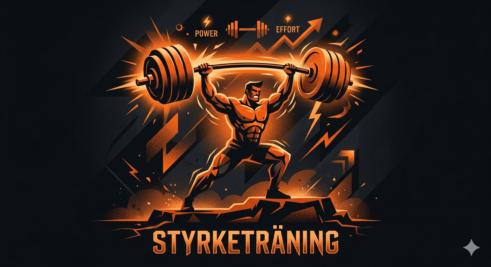
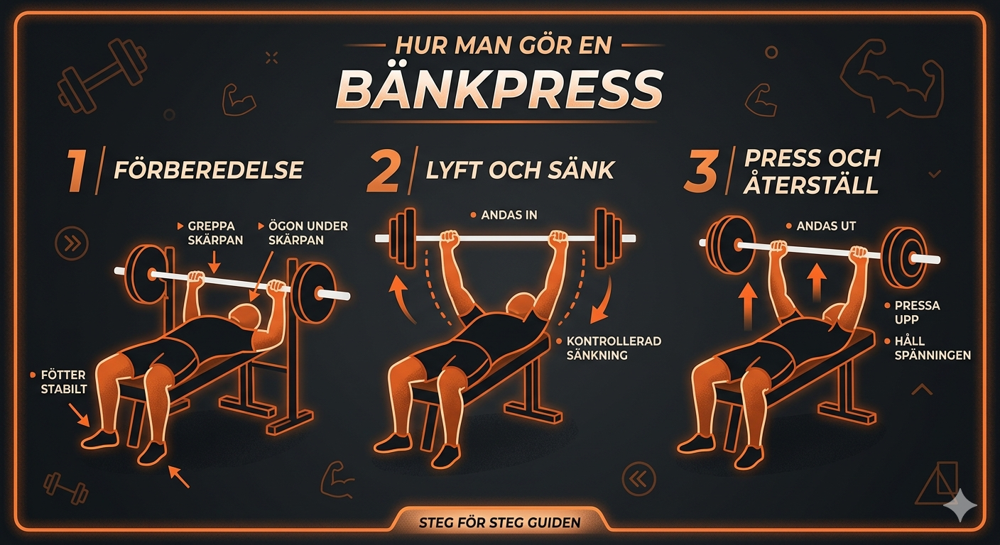
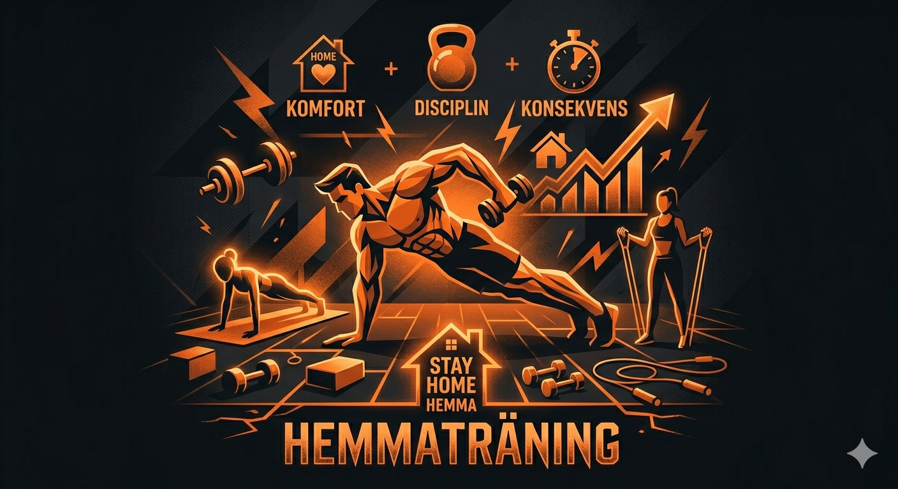
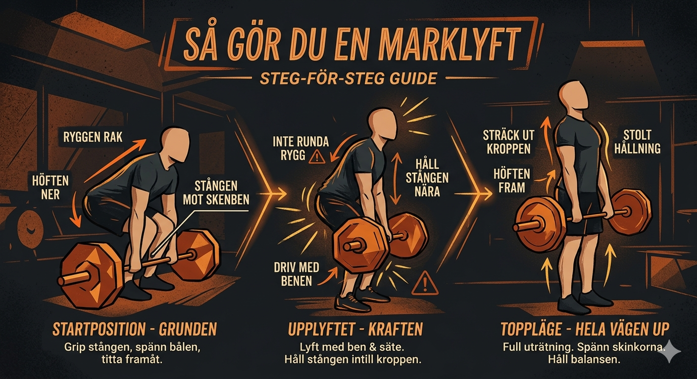
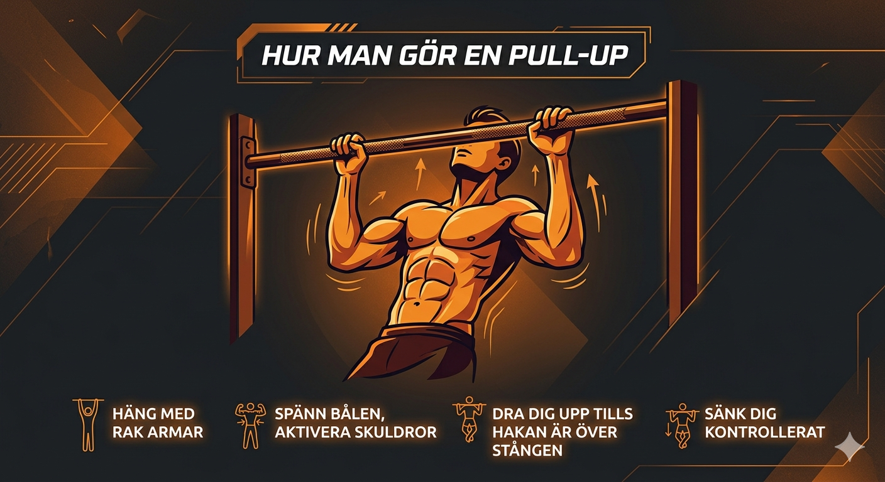
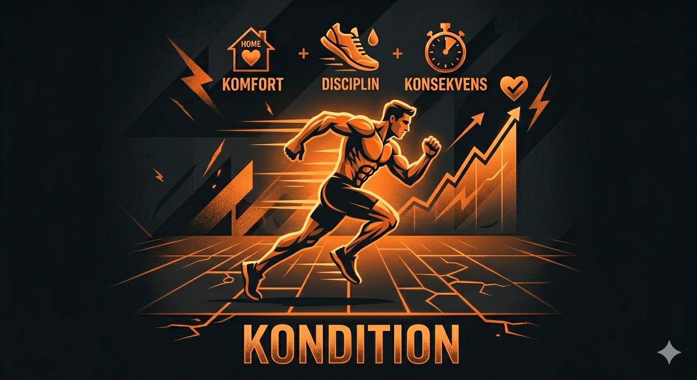
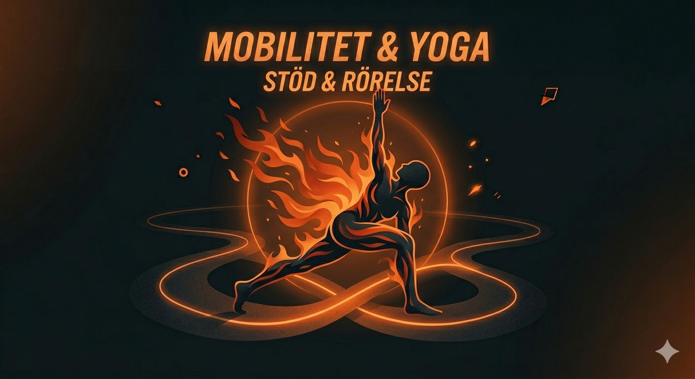
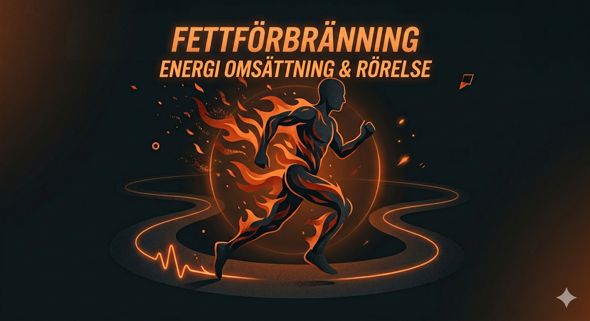
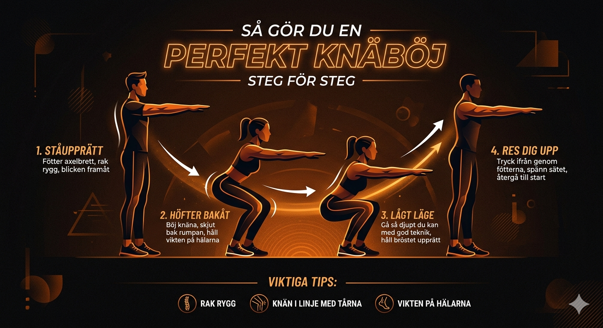
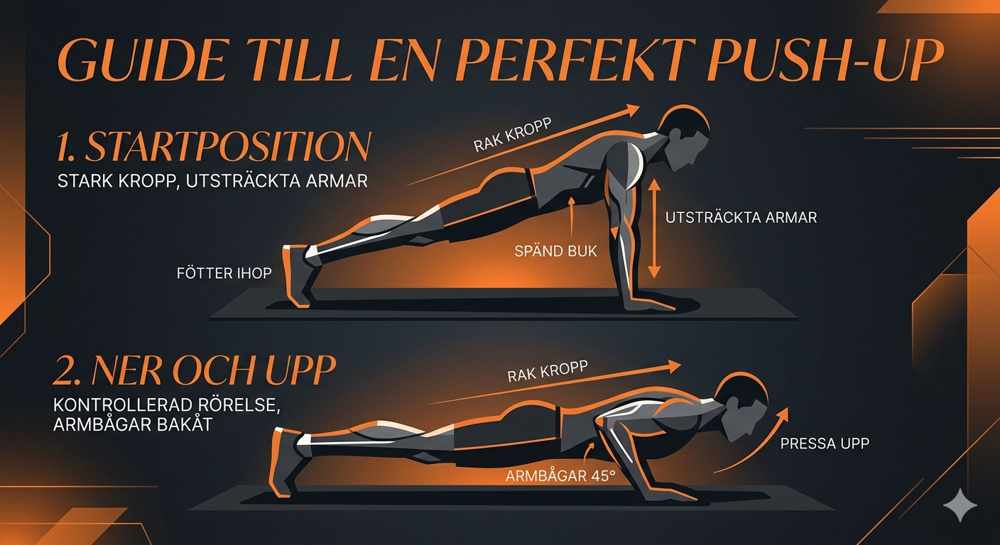

Problem
Många vill börja träna men fastnar i för många val: gym eller hemma, styrka eller kondition, maskiner eller fria vikter, tre dagar eller sex.
AI Agency Portfolio
En seriös träningsguide som hjälper dig välja rätt schema utifrån mål, erfarenhet, tid och tillgång till utrustning.
Grundidé
Många vill börja träna men fastnar i för många val: gym eller hemma, styrka eller kondition, maskiner eller fria vikter, tre dagar eller sex.
Trainwise AI samlar träningsscheman, övningsbilder, video och ljud i en tydlig guide där användaren får ett rimligt första val.
Träningsintresserade personer i olika åldrar och ekonomiska situationer, från nybörjare till mer avancerade användare.
Tjänster
Trainwise AI är en AI-stödd träningsguide, inte en färdig medicinsk eller personlig coach.
Guiden ställer enkla frågor om mål, nivå, träningsdagar och utrustning och rekommenderar ett passande första upplägg.
Sidan visar AI-stödda scheman med övningar, set, reps och inriktning för styrka, muskelbygge, kondition, hemmaträning och mobilitet.
Övningsbilder, video och voiceover gör det lättare att förstå rörelser, teknik och syftet med varje träningsval.
Interaktiv guide
Välj det som stämmer bäst. Guiden prioriterar ett tryggt och realistiskt upplägg.
Träningsscheman








Övningsbibliotek

Håll bröstet stolt, spänn bålen och pressa knäna i samma riktning som tårna.
Skulderbladen bakåt, fötterna stadigt i golvet och kontrollerad sänkning mot bröstet.
Starta nära stången, håll ryggen neutral och låt höften och benen driva lyftet.

Rak kroppslinje, händer under axlarna och full kontroll både ned och upp.
Dra skulderbladen nedåt först, håll kroppen stabil och sikta bröstet mot stången.
Voiceover beskriver tjänsten. Podcasten finns som extra material i projektmappen.
Fiktivt kundcase
Sara är 17 år, vill börja träna seriöst men vet inte om hon ska välja hemmaträning, maskiner eller fria vikter. Hon har tre dagar i veckan och vill bygga styrka utan att skada sig.
Guiden rekommenderar Helkropp 3 dagar eller Endast gymmaskiner. Hon får övningar med set, reps, vila och teknikbilder. När hon blir tryggare kan hon gå vidare till Upper/Lower.
Sara slipper gissa, får en tydlig start och kan välja efter sin situation. AI:n tillför värde genom att strukturera många alternativ till ett personligt och lättbegripligt beslut.
Så använde jag AI
Bilder skapades med Gemini, logotypidé med Looka, video med Vidu, AI-röst med Minimax och podcast med NotebookLM. Webbplatsen sattes samman med AI-stöd.
Materialet sorterades efter mål, nivå och utrustning. Scheman förkortades och skrevs om så de blir tydliga på en hemsida istället för att bara ligga i PDF.
Den interaktiva guiden blev mest lyckad eftersom den gör träningsbiblioteket mer användbart och hjälper besökaren att snabbt hitta rätt startpunkt.
Det svåraste var att välja vad som skulle synas direkt på sidan och vad som skulle ligga som extra PDF-material, så att helheten inte blev rörig.
Först blev materialet för brett och PDF-likt. Jag förbättrade det genom att dela upp innehållet i guide, scheman, övningar, case och AI-process.
Jag kontrollerade att sidan är självständig, att media finns direkt på sidan, att guiden ger rimliga rekommendationer och att innehållet matchar målgruppen.
Projektet använder generativ AI för text, bild, ljud och video. Promptning, urval, redigering och granskning påverkade slutresultatets kvalitet.